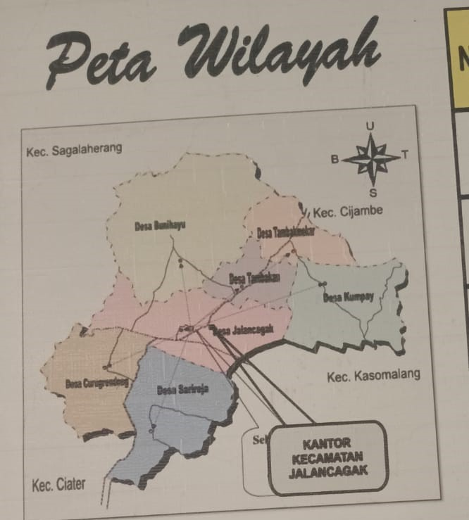

PETA KECAMATAN JALANCAGAK



Kecamatan Jalancagak merupakan salah satu kecamatan yang berada di wilayah Kabupaten Subang, Provinsi Jawa Barat. Secara geografis, Kecamatan Jalancagak berada di kawasan dataran tinggi yang memiliki kondisi alam sejuk dan nyaman. Letak wilayah yang strategis membuat Kecamatan Jalancagak menjadi salah satu jalur penghubung menuju berbagai daerah wisata dan wilayah lain di Kabupaten Subang. Akses jalan yang cukup baik menjadikan mobilitas masyarakat dan aktivitas ekonomi dapat berjalan dengan lancar setiap harinya.
Berdasarkan kondisi wilayahnya, Kecamatan Jalancagak memiliki berbagai area pemukiman masyarakat, lahan pertanian, perkebunan, serta kawasan perdagangan yang tersebar di beberapa desa. Wilayah ini juga dikenal memiliki kontur tanah yang cukup berbukit sehingga memberikan pemandangan alam yang indah dan udara yang lebih sejuk dibandingkan daerah perkotaan. Keadaan geografis tersebut menjadi salah satu potensi utama yang mendukung perkembangan sektor pertanian dan pariwisata di Kecamatan Jalancagak.
Pada peta wilayah Kecamatan Jalancagak dapat terlihat pembagian wilayah administrasi desa yang saling terhubung melalui jaringan jalan utama maupun jalan desa. Sarana transportasi yang tersedia cukup membantu aktivitas masyarakat dalam menjalankan kegiatan pendidikan, perdagangan, pemerintahan, serta pelayanan publik lainnya. Selain itu, keberadaan jalur penghubung antarwilayah juga mempermudah akses menuju pusat pemerintahan Kabupaten Subang dan daerah wisata di sekitarnya.
Kondisi geografis Kecamatan Jalancagak yang berada di daerah pegunungan membuat wilayah ini memiliki curah hujan yang cukup baik dan tanah yang subur. Oleh karena itu sebagian besar masyarakat memanfaatkan lahan yang tersedia untuk kegiatan pertanian dan perkebunan. Beberapa komoditas pertanian yang cukup berkembang di wilayah ini antara lain sayuran, buah-buahan, dan tanaman perkebunan yang menjadi sumber penghasilan masyarakat setempat.
Dengan letak geografis yang strategis dan potensi wilayah yang cukup besar, Kecamatan Jalancagak terus mengalami perkembangan dalam berbagai bidang seperti pembangunan infrastruktur, pelayanan publik, pendidikan, serta pengembangan kawasan wisata. Peta wilayah Kecamatan Jalancagak menjadi salah satu informasi penting yang dapat membantu masyarakat maupun pengunjung dalam mengenal kondisi wilayah, batas administrasi, serta lokasi penting yang terdapat di kecamatan tersebut.